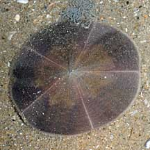
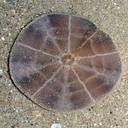
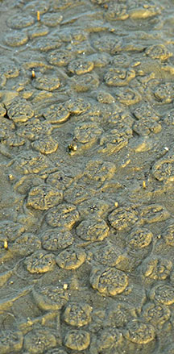
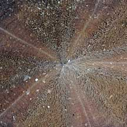
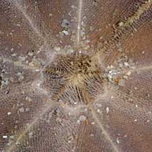
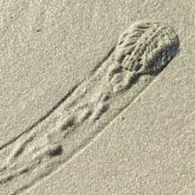
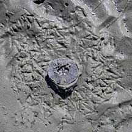
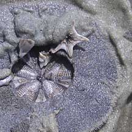
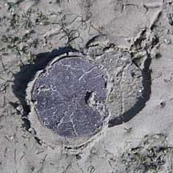
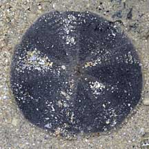

|
|
| echinoids text index | photo index |
| Phylum Echinodermata > Class Echinodea > Order Clypeasteroida |
| Cake
sand dollar Arachnoides placenta Family Clypeasteridae updated Mar 2020 Where seen? This rather featureless disk-shaped animal is commonly seen on some of our Northern shores, on sand bars and sandy areas near seagrasses. Often found in groups of large numbers of individuals, half buried in the sand. Sometimes also seen on the Southern shores. Features: Body diameter 6-8cm. Seen in various sizes, some may be tiny (about the size of a 10cent coin). It has no slots in the body. While the star-shaped petalloid is not very obvious in living specimens, they are clearly seen in the test of a dead sand dollar. The colours of a living sand dollar may range from deep reddish-purple, to brownish-purple or beige. |
 Changi, May 08 |
 Underside. |
 They are often found in huge numbers. Chek Jawa, Jan 09 |
|
 Upperside. |
 Mouth on the underside. |
| Dead or alive? Sand dollars may appear dead, but they are very much alive. A living sand dollar is covered with fine spines and appears velvety. The skeleton (test) of a dead one is smooth, without any spines, and the details of skeleton can be seen more clearly. The skeleton is fragile and will shatter at the slightest pressure. |
 Upperside of test |
 Underside of test |
 Living sand dollar moving under wet sand. |
 Changi, Jun 06 |
 |
 Living sand dollars, not moving under sand. Lazarus Island, Jun 09 |
| What eats sand dollars? Some snails such as the Grey bonnet are believed to feed on sand dollars. A Knobbly sea star was seen with its stomach stuck to a sand dollar. A Haddon's carpet anemone was also seen in the process of engulfing one. Kok Sheng also shared a video clip (below) of hermit crabs arguing over a sand dollar. Tiny parasitic snails are sometimes seen on them too. |
 Is this Grey bonnet snail eating a sand dollar? Cyrene Reef, May 11 Photo shared by Marcus Ng on flickr. |
||


| Pecked to death? On Chek Jawa, many sand dollars are observed flipped over with their undersides broken. From the prints around the sand dollars, it seems they were flipped and pecked by birds. Strangely, some sand dollars are flipped but unpecked. Perhaps only egg-bearing females are pecked? |
 Bird footprints surround the sand dollar. Chek Jawa, Mar 10 |
 It seems birds have flipped over some and pecked out the underside. |
 Some are flipped but not harmed. Only egg-bearing females are pecked? Chek Jawa, Mar 10 |
| Status and threats: The Cake sand dollar is not listed among the threatened animals of Singapore. The main threat is habitat loss due to reclamation or human activities along the coast that pollute the water. Like other creatures of the intertidal zone, they are affected by human activities such as reclamation and pollution. Trampling by careless visitors and over-collection can also have an impact on local populations. |
| Cake sand dollars on Singapore shores |
On wildsingapore
flickr
|
| Other sightings on Singapore shores |
 Pulau Sudong, Dec 09 |
| Filmed at East
Coast Park Give me back my dollar! from Loh Kok Sheng on Vimeo. |
Links
|